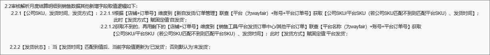

1.【Walmart、wayfair、VC/发货数据/平台发货订单、其他平台/平台发货订单】：——5.8上线
1.1列表新增【当地下单时间、当地发货时间】，位于【发货时间】右侧；
2.1拉取平台发货订单数据时，新增拉取这两列【当地下单时间、当地发货时间】字段值；
2.【wayfair】：——5.8上线
2.1【cg发票清单】：搜索框【发票号】需支持空格转逗号；
2.2【基础类型/基础类型/Wayfair】：新增、修改按钮弹窗，当适用范围=销售数据时，【描述】改为非必录，下拉新增选项无；（2.2月底上线）
较重逻辑：当适用范围=‘销售数据’时，按【类型+描述】维度较重；提交时，需校验描述/类型不能均为无；
3.【VC/发货数据/自发货订单】：【拉取自发货订单】按钮，拉取数据时【佣金比例】改为固定赋‘0’；——5.8上线
4.【成本核算/国境外佰易底稿/销售出库】：【重拉小平台销售出库】按钮和拉取平台发货订单定时任务，【单据日期】取值逻辑改为取数据源的【当地发货时间】；——5.8上线
5.【wayfair/下载详情】：审核月度、自定义结算明细时，匹配【公司SKU、发货时间、发货方式、发货状态】的逻辑调整如下：——5.8上线
5.1当【账单模块】=‘Deduction’时，保持现有匹配逻辑，详见v8.1.1 第13点；
5.2当【账单模块】=‘order’时，匹配逻辑调整为历史逻辑，详见v7.5.1 下载详情2.2：
其他账单模块不用匹
6.【成本核算/国境外佰易底稿/期末（核算）】：【入库、出库数量】列超链接详情弹窗，同样需新增海外仓权限相关逻辑；
7.【Amazon/预收数据】：【拉取预收数据】按钮，匹自发货站点逻辑由原来的中文改为英文站点；——原因：自发货系统不关注中文站点，仅对英文站点做维护；
8.【wayfair/walmart/vc/其他平台】：自发货订单、平台发货订单、销售数据 适配UK GB站点；——原因：自发货存在站点为UK和GB的英国站点订单；
